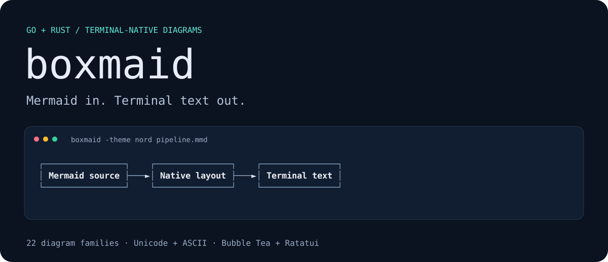
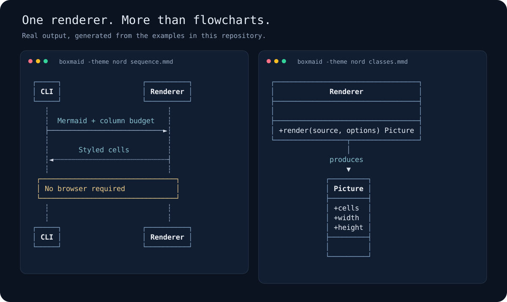

22
Which diagrams can I draw?
Flowcharts, sequences, classes, ER, C4, Gantt, and more. Each family has documented syntax coverage.
GO + RUST · TERMINAL-NATIVE DIAGRAMS
Bring diagrams into the tools you already live in.
Render Mermaid as real text in your CLI, TUI, docs, or agent workflow.
Open source · MIT licensed · No browser or JavaScript runtime required

22
Flowcharts, sequences, classes, ER, C4, Gantt, and more. Each family has documented syntax coverage.
2
Native Go and Rust libraries, checked against shared output fixtures. Embed semantic cells directly in Bubble Tea or Ratatui.
80
Choose a column budget. Boxmaid tries wrapping and alternate layouts. Strict-fit mode tells you when a drawing needs more room.
A SMALL TOOL THAT GOES WHERE YOU WORK
Install the Go CLI, or grab a prebuilt binary for Linux, macOS, or Windows.
go install github.com/rickthegreatest/boxmaid/cmd/boxmaid@latestboxmaid -w 80 -color never -require-fit diagram.mmdGo CLI: Go 1.22+ · Bubble Tea module: Go 1.24+ · Rust: 1.88+
These are real drawings generated from the Mermaid examples in the repository, presented with a high-contrast theme.

BUILT TO BE EMBEDDED
Explicit widths, predictable exit codes, semantic cell styling, and browser fallback links. Read the integration contracts and keep the original Mermaid source.